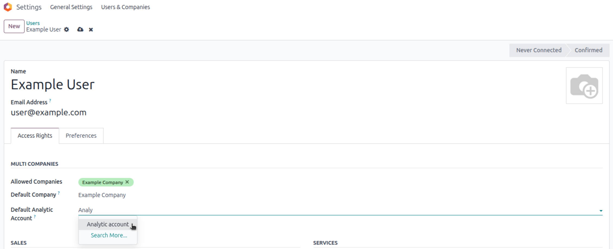
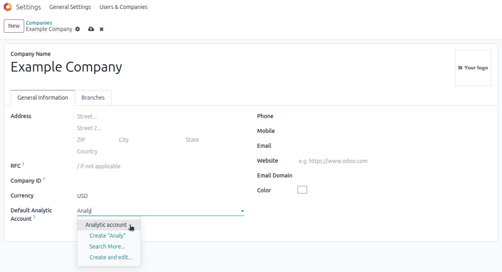
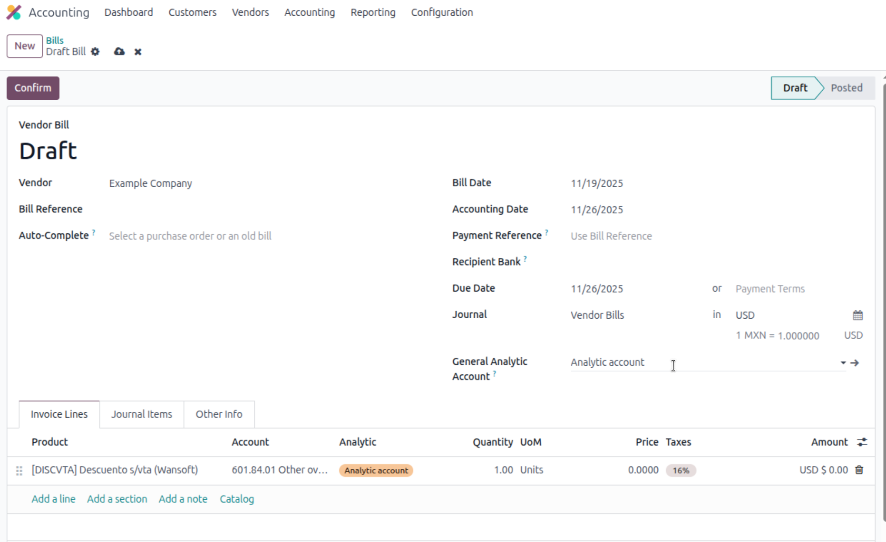

User & Company Default Analytic Account
Automate Analytic Distribution in Odoo 18
Author: Esteban Viniegra Perez Olagaray — esteban@eviniegra.software
For Odoo 18 Community & Enterprise
Streamline your accounting workflow by automatically assigning analytic accounts to invoice lines based on User or Company defaults. Includes a powerful mass-update feature directly on the invoice.
Key Features
- User-Level Defaults: Assign a specific analytic account to each user (e.g., for salespeople or department heads).
- Company-Level Defaults: Set a fallback analytic account for the entire company.
- Smart Priority Logic: The system automatically selects the best account based on a hierarchy: Invoice Header > Company > User.
- Mass Update Tool: Use the "General Analytic Account" field on the invoice header to force a specific account onto all lines instantly.
- Fallback Mechanism: If you remove the General Account, lines automatically revert to their default Company or User settings.
- Odoo 18 Ready: Fully compatible with the new JSON-based
analytic_distributionfield.
Configuration
1. User Configuration
Go to Settings > Users & Companies > Users. Open a user, go to the Access Rights tab, and find the Multi Companies section.

Define the specific analytic account for this user.
2. Company Configuration
Go to Settings > Users & Companies > Companies. Open your company form. Check the General Information tab.

Set a fallback account if the user doesn't have one.
Usage Workflow
When creating an invoice, the system auto-fills the analytic distribution. You can also override everything using the header field.

- Automatic Assignment: As you add invoice lines, the system checks if a "General Analytic Account" is set on the header. If not, it checks the Company default, then the User default.
- Mass Editing: Select an account in the "General Analytic Account" field (in the invoice header). All existing lines will be updated immediately.
- Resetting: Clear the "General Analytic Account" field to restore the lines to their original defaults (Company or User based).
Credits
Developed by Pridecta for Odoo 18.